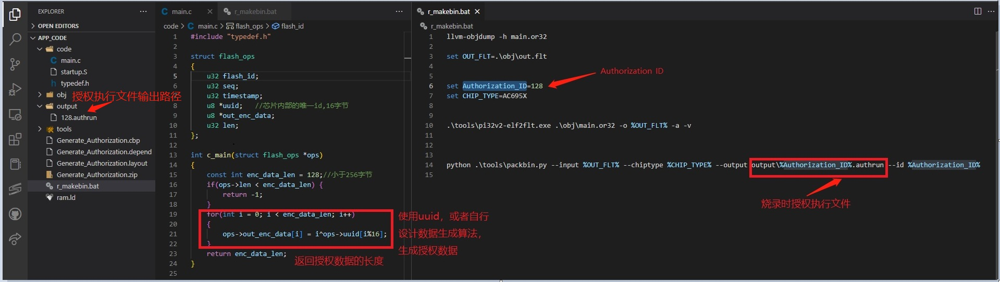
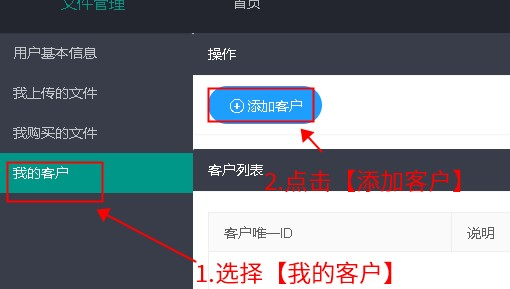
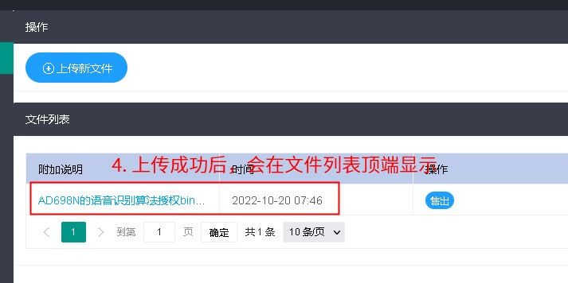
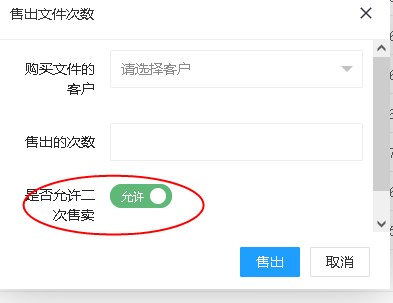

4.2. 算法提供商需要做的事情
4.2.1. 申请账号
如果您确定需要通过杰理多算法授权服务器销售您的算法授权， 并且您还没有多算法授权服务器的账号，
那么请您联系珠海杰理申请多算法授权服务器账号， 并帮助您算法的使用者获取多算法授权服务器账号。
更多信息请查阅杰理服务器使用方式
4.2.2. 获取 Authroization_ID
与生产商协商授权数据的存储 ID （Authorization_ID）。
因为在同一个 SDK 中，需要用这个 ID 来标识并区分不同的算法。
您需要确认与生产商协商的 ID 在（64~999）范围内。
Note
这个 Authorization_ID 也就是在 SDK 中的 API 函数 sys_cfg_read_otp(Authorization_ID, enc_data, Authorization_Data_len);或syscfg_read_otp(Authorization_ID, enc_data, Authorization_Data_len); 的第一个参数。
同时也是下面的工程模板中 r_makebin.bat 中的 set Authorization_ID=234 中的 Authorization_ID。
这几个地方的 Authorization_ID 是要保持一致的。表示的是当前的算法提供商的授权数据在存储的时候，以什么 Authorization_ID 存储（不同的算法有不同的 Authorization_ID）。
这个 Authorization_ID 的作用就是用于区分同一个芯片上，不同算法的授权数据。
4.2.3. 确定授权数据的大小
授权数据即，算法公司写入到芯片中的授权数据。这个大小需要固定,且小于256字节，确认后不能更改。
4.2.4. 生成烧录时授权执行文件
烧录时授权执行文件，即.authrun文件，是一个可以在芯片中运行的文件。
烧录器在烧录的时候，会执行所有的.authrun文件，并将授权信息写入芯片中。
算法公司，需要在杰理提供的烧录时授权执行文件工程模板（点击此处下载）中（Generate_Authorization)，加入授权算法，并编译生成烧录时授权执行文件（.authrun 文件）。

Important
注意，在修改 r_makebin.bat 中，下面的这两句话的时候，不能多余的空格（等号前后，行尾），bat脚本对空格是敏感的。
set Authorization_ID=234
set CHIP_TYPE=AC695X
具体的修改方式，参考工程模板中的说明。
4.2.5. 算法库（.a 文件）添加授权数据验证
算法公司在对应的算法库（.a文件）里面添加授权数据验证过程。
Note
注意，.authrun 文件 和 算法库（.a文件） 是两个不同的东西。
只有 .authrun 文件需要上传到杰理的服务器。
.a 文件需要在添加下面的检查授权数据是否合法的步骤后，再发给客户（邮件或者其它方式，不需要经过杰理的服务器）
文件 |
传递方式 |
作用 |
|---|---|---|
|
1. 算法公司上传杰理服务器 |
1. 产生授权数据，返回给烧录器，用以写入到芯片中。 |
|
无需经过杰理服务器 |
1. 包含了算法公司实际要提供的算法 |
Authorization_ID 用以沟通 .a 文件和 .authrun 文件。
如果有了 SDK，不清楚如何获取对应用于生成.a文件的工程，参考：在已经有了标准 SDK 工程的情况下，如何获得编译库的工程
Note
注意，下面的示例代码，是与模板工程中示例的加密数据是对应的。
如果算法公司修改了模板工程中c_main的加密数据（即授权数据）生成方式，也需要对应修改校验授权数据的过程

extern u32 sys_cfg_read_otp(u32 id, u8 *buf, u32 len);
//或extern u32 syscfg_read_otp(u32 id, u8 *buf, u32 len);
extern u32 norflash_get_uuid(u8 *uuid);
//因为算法可以在多款芯片上执行，为了限制运行的芯片型号，可以根据上图在算法库里面添加芯片型号检测
//举个例子，若限制对应的库只能在695系列执行，就添加如下代码：
if((JL_SYSTEM->CHIP_ID & 0xff00) == 0x5E00){
printf("run on 695x(BR23)");
}else{
while(1);
}
const u32 Authorization_ID = 128; // 这个需要对应修改为当前算法公司的 ID
const u32 Authorization_Data_len = 17; // 这个需要对应修改为 .authrun 中指定的长度
u8 enc_data[32]; // 用于保存 sys_cfg_read_otp 读取的输出，必须比 Authorization_Data_len 长(或相等)
// 从芯片中，读取当前算法公司的授权数据
int r = sys_cfg_read_otp(Authorization_ID, enc_data /* 输出 */, Authorization_Data_len);
//或int r = syscfg_read_otp(Authorization_ID, enc_data /* 输出 */, Authorization_Data_len);
if(r!= Authorization_Data_len){
log_info("read error %d", r);
// 芯片中无法读取到有效的授权数据，则需要退出，让算法函数不再正常工作
return;
}
put_buf(enc_data, r); // 打印读取的授权数据（用于调试，观察）
//校验授权数据是否合法
// 下面的是示例代码，需要与 .authrun 文件的 c_main 中的生成方法对应
for(int i = 0; i < r; i++)
{
// uuid 获取方式，参考：
// 使用 norflash_get_uuid(&out_uuid); 固定 16 个字节
// printf_buf(out_uuid, 16);
// 具体可以咨询 提供 SDK 的人
u8 uuid[16];
u32 flash_id = norflash_get_uuid(&uuid);
if(enc_data[i] != (i^uuid[i%16])){
log_info("check error %d %x %x", i,enc_data[i],i^uuid[i%16]);
// 当授权数据不合法的时候，需要退出
// 例如，可以让算法函数不再正常工作
return;
}
}
4.2.6. 添加生产商为客户
在杰理的服务器（使用方式参考：杰理服务器使用方式），建立自己的账户（如果有，则跳过）
在杰理的服务器上，【我的客户】处，添加生产商（如果已经添加过，则跳过）
注意！这里添加的是生产商的唯一ID，而不是自己的唯一ID
添加唯一ID时，如果提示失败，请首先检查唯一ID的字母大小写。
一些输入法插件可能会自动将某些字母转换为大写或者小写。
为方便核对和操作，复制唯一ID请同时使用截图+文本复制两种方式。
即使用截图软件(或者插件)从网页上截图唯一ID，和通过系统剪贴板(右键)复制唯一ID。



4.2.7. 上传烧录时授权执行文件
在【我上传的文件】处，上传授权bin文件（即，.authrun文件），到杰理的服务器。



4.2.8. 出售烧录时授权执行文件
在【我上传的文件】处，找到需要出售的文件，【售出】若干次数给生产商。


注意，如果希望购买文件的对象（例子里面是生产商），可以再次将购买的次数，转售给其它用户。可以在售出的时候，勾选【允许二次售卖】。如下图:

默认情况下，不允许转售。
当购买的文件是开启了允许转售的时候，则购买文件的人，可以在【我购买的文件】下，找到对应的文件，选择【转售】进行转售。
Note
生产商并不能通过服务器拿到原始的
.authrun文件内容。算法商需要注意不能将.authrun文件泄露给生产商。同一个文件可以上传后，可以多次售出。多次售出的结果会累计。